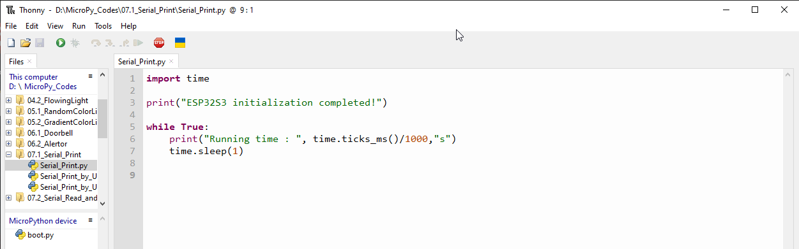
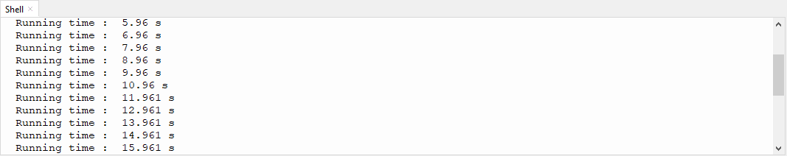
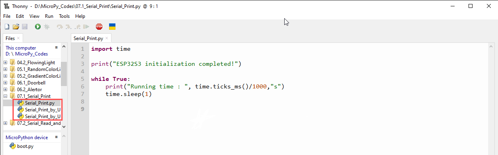
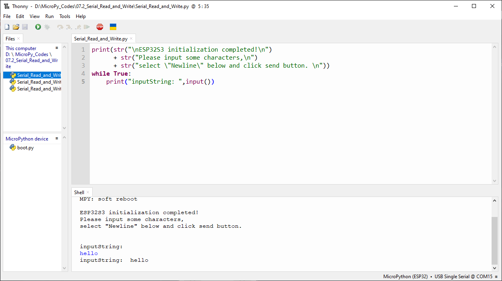
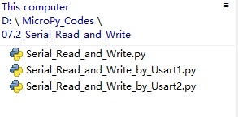

Chapter 7 Serial Communication
Serial Communication is a means of communication between different devices/devices. This section describes ESP32-S3’s Serial Communication
Project 7.1 Serial Print
This project uses ESP32-S3’s serial communicator to send data to the computer and
print it on the serial monitor.
Component List
ESP32-S3-WROOM x1
GPIO Extension Board x1
Type C USB Cable x1
Connect
Connect ESP32-S3 to the computer with USB cable.

Code
Move the program folder “Super_Starter_Kit_for_ESP32_S3/Python/Python_C odes” to disk(D) in advance with the path of “D:/Micropython_Codes”.
Open “Thonny”, click “This computer” >> “D:” >> “Micropython_Codes” >> “07.1_Seri al_Print” and double “Serial_Print.py”.
07.1_Serial_Print
Click “Run current script” and observe the changes of “Shell”, which will display the time when ESP32-S3 is powered on once per second.
The following is the program code:
import time
print("ESP32S3 initialization completed!")
while True:
print("Running time : ", time.ticks_ms()/1000,"s")
time.sleep(1)
ESP32-S3 has 3 serial ports, one of which is used as REPL, that is, Pin(43) and Pin(44) are occupied, and generally it is not recommended to be used as tx, rx. The other two serial ports can be configured simply by calling the UART module.
Project 7.2 Serial Read and Write
From last section, we use serial port on ESP32-S3 to send data to a com puter, now we will use that to receive data from computer.
Component and circuit are the same as in the previous project.
Code
Open “Thonny”, click “This computer” >> “D:” >> “Micropython_Codes” >> “07.2_Seria l_Read_and_Write” and double click “Serial_Read_and_Write.py”.
07.2_Serial_Read_and_Write
Click “Run current script” and ESP32-S3 will print out data at “Shell” and wait for users to enter any messages. Press Enter to end the input, and “Shell” will print out data that the user entered. If you want to use other serial ports, you can use other python files in the same directory.
